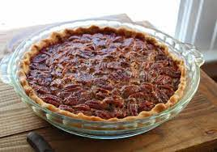

Description
The perfect pecan pie. It has the perfect ratio of crunchy nuts to the sweet, sticky goodness underneath. And thanks to the blind-baking, the crust is wonderfully crisp.
Ingredients
- 1 prepared pastry dough for 9-inch pie
- 2 cups pecan halves
- 1 cup light brown sugar
- ½ cup butter
- ½ cup white sugar
- ½ cup light corn syrup
- 3 tablespoons all-purpose flour
- 2 tablespoons milk
- 1 tablespoon bourbon
- 1 teaspoon vanilla extract
- ½ teaspoon salt
- 3 large eggs, whisked
Steps
- Preheat oven to 350 degrees F (175 degrees C).
- Roll pie dough in a 9 1/2-inch glass pie dish and crimp the edges. Cover dough in parchment paper and press paper down to line the dough; pour pie weights on top of the parchment paper and spread evenly over the bottom.
- Bake in the preheated oven for 20 minutes. Remove parchment paper and pie weights to a bowl. Bake crust until lightly golden and set, about 10 minutes more.
- Spread pecans out on a baking sheet. Bake in the oven until lightly toasted, 7 to 8 minutes.
- Stir brown sugar, butter, white sugar, corn syrup, flour, milk, bourbon, vanilla extract, and salt together in a saucepan over medium heat; bring to a boil, whisking constantly. Remove from heat and cool for 5 to 10 minutes.
- Whisk eggs in a large bowl. Slowly drizzle sugar mixture into eggs, whisking constantly.
- Spread pecans out in the bottom of the crust. Pour sugar mixture over nuts and gently stir with a spatula to coat all of the nuts.
- Bake pie in the preheated oven until crust is golden brown and pie is set, 40 to 45 minutes. Cool completely.